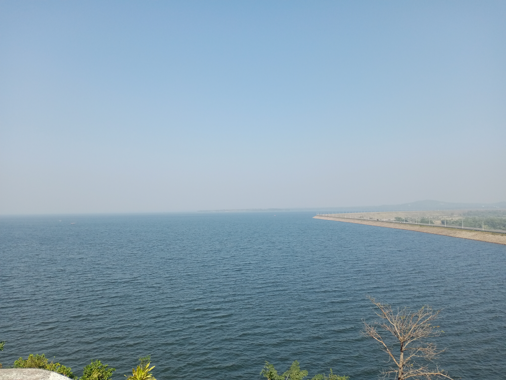
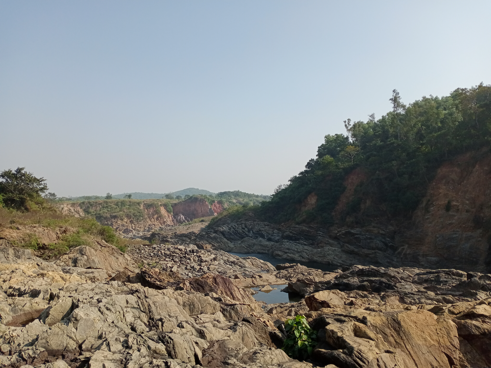

Located around 55 kms from Bankura town, it is one of the biggest dam in Eastern India. Mukutmonipur Dam stands on the Kansabati River
and a place with high tourist attraction. Road journey form Bankura town to Mukutmonipur, another majestic road journey with views of hand-painted
huts on the both sides of the road and small hills in the background.
The sign on the board translates to "Traveller"
The Mukutmonipur Reservoir
Located around 55 kms from Bankura town, it is one of the biggest dam in Eastern India. Mukutmonipur Dam stands on the Kansabati River
and a place with high tourist attraction. Road journey form Bankura town to Mukutmonipur, another majestic road journey with views of hand-painted
huts on the both sides of the road and small hills in the background.
The sign on the board translates to "Traveller"
The Mukutmonipur Reservoir

Finally when you reach the destination, a majestic shining blue
waterbody welcomes you. The reservoir is so huge that it gives a feeling of a landlocked blue sea.
There are roads on the sides of reservoir which gives a exciting experience of riding bikes while enjoying the massive water reservoir.
There are seats on the side of the roads for people to sit and enjoy there evenings watching sunset. In short, the roads on the sides of the reservoir
are somewhat like marine drive. We even climbed to a hill and watched the reservoir from the top. Ayeee Hayeee, such a enchanting beauty
of the blue shining waterbody. The adjacent sides of the reservoir are carpeted with vegetation and some patches are with crops for
harvesting. And small hills on the far background. While travelling on these roads, my eyes had to periodically turn sideways to catch
every wonderful scenery. There is a Shivji temple on top of a small hill adjacent to the reservoir. Motor-boat rides are also available
on the reservoir. Yet another exciting and adventurous ride. I can spend hours siting and enjoying the beautiful sceneries.

The other side of the dam hosts other eye-catching sceneries including a small waterfall. River cliffs which possess another marvellous view to enjoy siting on a bench in
the park on the edge of dam or even climbing down on the other side of the dam to enjoy taking bath under the waterfall or sitting on one of the huge stones and enjoying
the view of the river cliffs. Lots and lots of exciting activities to enjoy at this place. Just a spoiler:
On the other side of reservoir
quite crowdy though! During the winter season.

 View of the Cliffs
View of the Cliffs